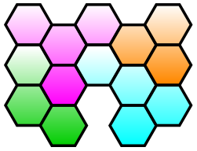
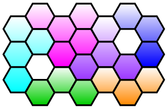
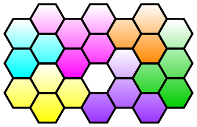

Chapter 4 古巣の危機Bio Terror
- 2血清を探せ！/Race for the Cure
-
Information
- バイタル 90/99
- タイムリミット 3分
Process
- 場所を選択
- トリーティから血清を手に入れる
- 3種類手に入れたら手術終了
Guide
トリーティに注射すると潜って姿を消すので、エコーで探り当ててメスで外に出し、再度注射を打つ。これを繰り返して動きを止めたら、ピンセットでトレーに載せてメスで切り、ドレーンで吸う。
3種類はランダムで遭遇する。
Special Bonus
条件 スコア MAX CHAIN 【5/10/12】以上 1000 毒素発生個数が【10/5/3】個以下 500 【80/120/140】秒以上残して手術終了 300 Miss判定無し 200 Operation Rank
ランク スコア C ～3599 B 3600～3799 A 3800～3999 S 4000～4199 XS 4300～ for XS
特に難しいステージではないので難なくXSが出るはず。
Movie
- 4一人前/Stepping Up
-
Information
- バイタル 70/75
- タイムリミット 5分
Process
- トリーティの処置
Guide
トリーティの基本的な攻略はギルス攻略：トリーティを参照。
Special Bonus
条件 スコア MAX CHAIN 【10/15/18】以上 500 毒憩室の発生個数が【9/6/3】個以下 500 【60/150/180】秒以上残して手術終了 400 Miss判定無し 600 Operation Rank
ランク スコア C ～7299 B 7300～7499 A 7500～7999 S 8000～8199 XS 8200～ for XS
トリーティへの注射のコツを掴もう。誤投与無しのノーミスなら問題無くXSが出るはず。
Movie
- 6最初の一刀/The First Step
-
Information
- バイタル 90/99
- タイムリミット 5分
Process
- ひたすらメス
- ひたすらレーザー
- ひたすらゼリー
- 青い薬を注射
- 赤い薬を注射
- 黄色い薬を注射
- 白い薬を注射
- 青い薬を注射した後、一定時間内に黄色い薬を注射する
- 赤い薬を注射した後、一定時間内に白い薬を注射する
- メスで組織を切り取ってピンセットでトレーに摘出
Guide
指示に従えば良いので特に難しいところは無いが、コアが消えそうな時に注射してしまうとミスになる可能性があるので、タイミングをよく見て注射すると良い。
青→黄、赤→白の連続投与は、コアが姿を現したときに投薬し始めれば十分に間に合うだろう。もし失敗した場合、青もしくは赤の薬から投薬し直しとなる。
Special Bonus
条件 スコア MAX CHAIN 【10/15/17】以上 1000 Miss判定無し 600 新垣の指示を【9/10/10】回以上こなす 400 Operation Rank
ランク スコア C ～2999 B 3000～4099 A 4100～5199 S 5200～5599 XS 5600～ for XS
白い薬を注射した後に、バイタルが70以下だと回復するように指示が出る。これをこなさないとボーナスにならないので、黄色い薬を注射したら少しの間放置しよう。
Movie
- 7新薬開発/Medical Research
-
Guide
回答

Special Bonus
条件 スコア 【20/10/5】秒以内に手術終了 2500 Operation Rank
ランク スコア C ～499 B 500～999 A 1000～1999 S 2000～2499 XS 2500～ - 8次なる一手/The Next Step
-
Information
- バイタル 85/90
- タイムリミット 5分
Process
- コアに2回注射する
- 腫瘍を焼却するよう指示が出る
- コアに注射する
- 膜が復活する
- コアに3回注射する
- コアを切り取ってピンセットでトレーに
Guide
途中発生する腫瘍は放置しておくとバイタルが大幅に減少するので、ちゃんと処理する。
Special Bonus
条件 スコア MAX CHAIN 【30/50/70】以上 600 Miss判定無し 600 【180/195/210】秒以上残して手術終了 800 Operation Rank
ランク スコア C ～3799 B 3800～4199 A 4200～4599 S 4600～4699 XS 4700～ for XS
CHAINが70必要なので、腫瘍は最優先で潰していこう。
Movie
- 9新型レーザー開発/Progress
-
Infomation
- 制限時間 5分
- バイタル 80/99
Guide
1問目

2問目

攻略とは関係ないが、一度はひたすら放置してみるのもいいだろう。
Special Bonus
条件 スコア 【30/20/15】秒以内に手術終了 2500 Operation Rank
ランク スコア C ～499 B 500～999 A 1000～1999 S 2000～2499 XS 2500～ - 10医師達の戦い/Prolonged Struggle
-
Information
- バイタル 75/85
- タイムリミット 5分
- レーザーの耐久度が無限
Process
- ペンプティの処置
Guide
ペンプティの基本的な攻略はギルス攻略：ペンプティを参照。
Special Bonus
条件 スコア MAX CHAIN 【50/70/90】以上 600 【80/120/140】秒以上残して手術終了 800 Miss判定無し 600 Operation Rank
ランク スコア C ～5499 B 5500～5999 A 6000～6299 S 6300～6499 XS 6500～ for XS
普通にビットを処理していただけではスコアが足りなくなるので、裂傷ビットをあえて放置し、裂傷をCool判定で縫合することでスコアを稼ぐ必要が出てくる。
なお、膜に腫瘍を潰された場合、CHAINが途切れるので注意。
Movie
- » Chapter 5